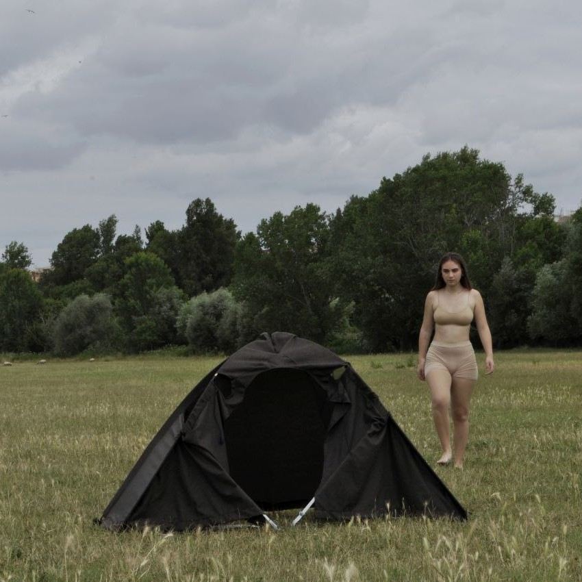
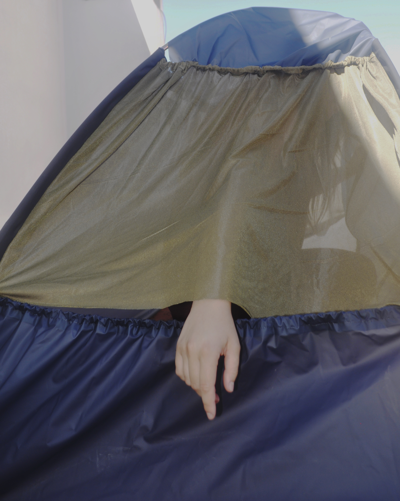

Experimental Design · 2025
NeedS
Uno studio sulle forme geometriche reinterpretate attraverso materiali morbidi.
Year
2025
Category
Experimental Design
Techniques
Draping

03 / 04
Hard shapes translated into soft structures.
The project draws inspiration from nomadic peoples, who sustain their way of life through values that have remained intact over time, as opposed to a society that creates seemingly vital and often unfulfillable needs.
Through a study of individuals in hostile contexts, I observed that their primary quest is for security, achieved through the perception of protection of the body in movement, guaranteed by clothing, and the availability of shelter during moments of stasis. This approach has allowed me to develop a garment capable of responding to both needs.